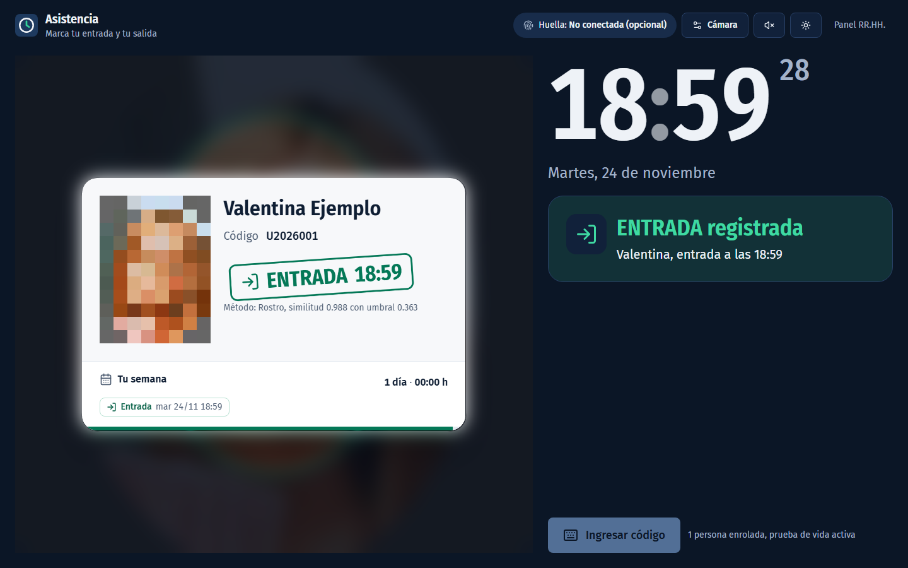
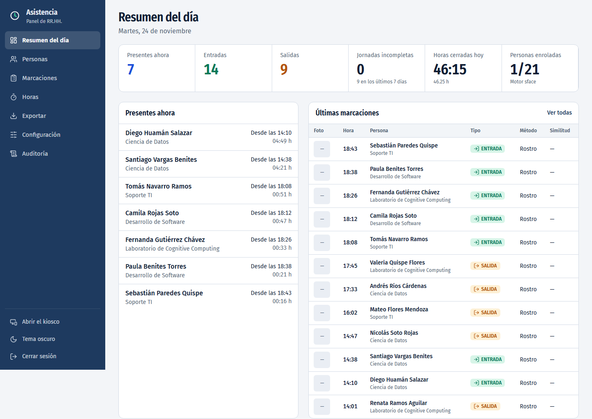
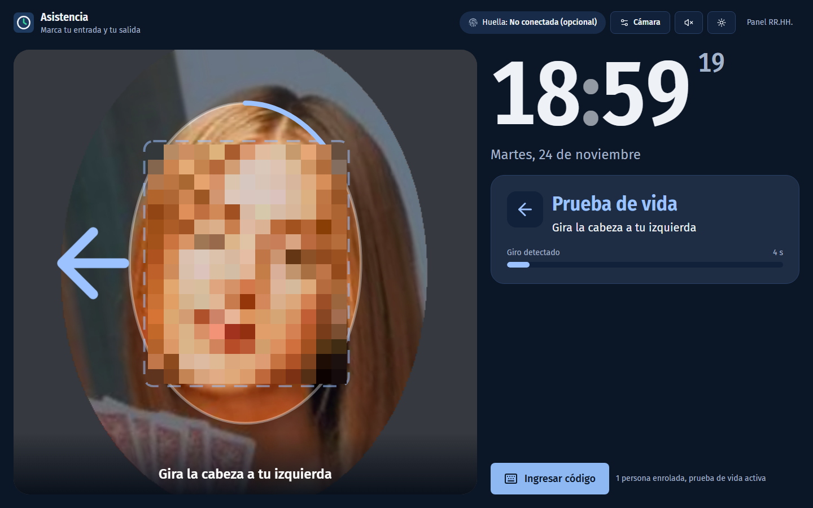
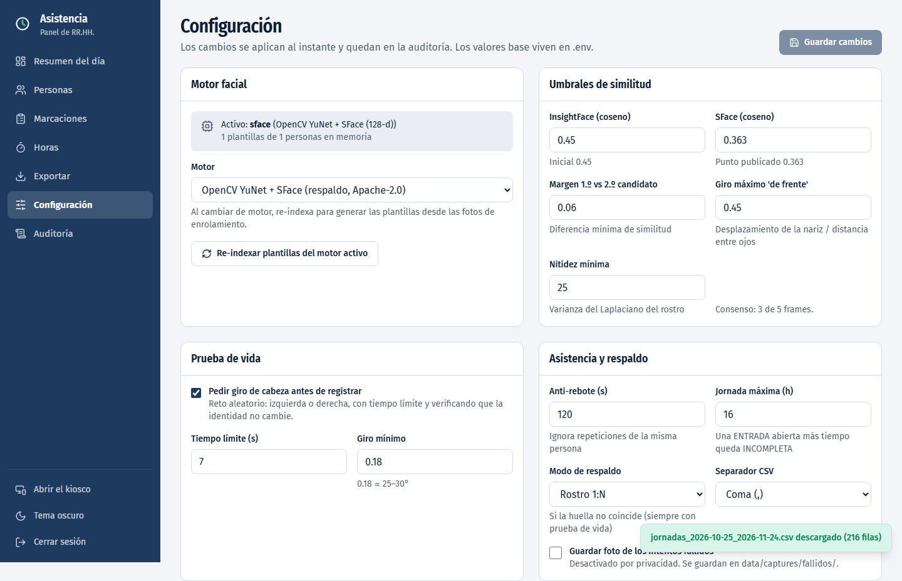

Kiosco web de entrada y salida con reconocimiento facial, prueba de vida y panel administrativo, desplegado en la nube (AWS). La IA corre en nuestro propio servidor, sin APIs de terceros.

Resumen. Proponemos y presentamos funcionando un sistema de control de asistencia para clases y laboratorios. El estudiante se acerca a un kiosco web, una cámara captura su rostro, un modelo de IA lo identifica y le pide un giro de cabeza para confirmar que es una persona real, y el sistema registra su ENTRADA o SALIDA. El docente gestiona personas, horas y reportes desde un panel web. La aplicación está desplegada en la nube (AWS EC2 con Docker y HTTPS) en https://54-221-47-156.sslip.io. El modelo de IA corre en nuestro propio servidor, así que los rostros no se envían a servicios de terceros. También puede ejecutarse 100 % en local.
| Requisito de los lineamientos | Cómo lo cumple el proyecto | Sección |
|---|---|---|
| Perfil Usuario | Estudiante: se identifica con su rostro, recibe el resultado al instante y consulta su resumen de la semana. | 5 |
| Perfil Administrador | Docente o RR.HH.: personas, enrolamiento, marcaciones, horas, exportaciones, configuración y auditoría. | 5 |
| Aplicación web | Aplicación web en React con dos entradas: kiosco (/) y panel administrativo (/admin). Funciona en pantallas desde 390 px de ancho. | 6 |
| Conexión a hardware | Cámara web (≈5 imágenes/s por HTTP local) y lector de huella AS608 por puerto serie UART como segundo sensor. | 7 |
| Inteligencia Artificial | Detección y reconocimiento facial con redes neuronales (SCRFD + ArcFace), identificación 1:N con consenso y prueba de vida. | 8 |
| Arquitectura inicial | Diagrama de perfiles, aplicación, backend, base de datos, hardware y modelo de IA. | 9 |
| Despliegue en la nube | AWS EC2 + Docker + Caddy (HTTPS): https://54-221-47-156.sslip.io. | 10 |
| Repositorio | https://github.com/Mateoutec/Proyecto-final-de-IC (código, informe y scripts de despliegue). | 10 |
Asistencia Biométrica: kiosco de asistencia con reconocimiento facial local.
Mateo Llallire Meza · Tomás Laura
¿Qué proponemos? Un kiosco web en una laptop con cámara. El estudiante solo mira a la cámara: el sistema lo reconoce, verifica que es una persona real y registra su marcación. El docente administra todo desde un panel web en el mismo equipo.
¿Cómo funciona?
¿Qué valor aporta? Marcar toma segundos y no requiere tarjetas ni contraseñas. El docente obtiene la asistencia y las horas listas para Excel, y cada marcación queda respaldada con foto, similitud y auditoría.
¿Qué lo diferencia de una solución tradicional?
Tipo: aplicación web de una sola página (React) que sirve el propio backend. Está publicada en https://54-221-47-156.sslip.io y también funciona en local, sin internet. Se adapta a la pantalla (verificado sin desplazamiento horizontal a 390 px). Tiene dos entradas, una por perfil: el kiosco (/), para usuarios, y el panel (/admin), para el administrador.
| Pantalla o módulo | Perfil | Qué permite |
|---|---|---|
| Kiosco: cámara y guía | Usuario | Vista espejada con óvalo guía, reloj grande y mensajes de calidad; selector de cámara. |
| Kiosco: prueba de vida | Usuario | Flecha de dirección, barra de progreso del giro y tiempo restante. |
| Kiosco: resultado | Usuario | Foto, ENTRADA o SALIDA, hora, horas de la jornada y el resumen «Tu semana». Si se activa, suena una confirmación. |
| Kiosco: ingresar código | Usuario | Modo de respaldo: código de estudiante más verificación facial 1:1. |
| Inicio de sesión | Admin | Acceso con contraseña al panel. |
| Resumen del día | Admin | Presentes, entradas, salidas, jornadas incompletas, desglose por área y últimas marcaciones. |
| Personas y ficha | Admin | Altas y ediciones; enrolamiento guiado con cámara o con fotos subidas; consentimiento; borrado de biometría. |
| Marcaciones | Admin | Filtros por fecha, área, persona, tipo y método; foto ampliable; anulación o marcación manual con motivo. |
| Horas | Admin | Jornadas ENTRADA→SALIDA, incluidos los turnos que cruzan la medianoche, y totales por persona. |
| Exportar | Admin | Jornadas, marcaciones y resumen por persona en CSV y Excel, más un ZIP con las fotos. |
| Configuración | Admin | Umbrales de IA, prueba de vida, anti-rebote, motor facial, estado de la huella y calibración. |
| Auditoría | Admin | Historial de todas las acciones administrativas. |

| Dispositivo | Función | Datos que captura | Conexión con la aplicación | Frecuencia |
|---|---|---|---|---|
| Cámara web operativa |
Sensor principal: captura el rostro para identificar y para la prueba de vida. | Imágenes JPEG de 640 px de ancho. Por cada marcación solo se guarda la mejor captura frontal, como evidencia. | USB o integrada. El navegador abre la cámara (getUserMedia) y envía cada imagen por HTTPS (nube) o HTTP local al backend. |
≈5 imágenes/s (una cada 200 ms) mientras el kiosco está abierto. |
| Lector de huella AS608 + adaptador USB-TTL (CP2102/CH340) integración v2 |
Segundo sensor biométrico: acelera la marcación o confirma la identidad junto con el rostro. | ID de la huella encontrada (búsqueda 1:N dentro del sensor) y su puntaje de coincidencia. | Puerto serie UART a 57 600 baudios (TX y RX cruzados), leído por el backend con pyserial. El kiosco consulta el resultado por long-polling. |
Bajo demanda: al apoyar el dedo (espera máx. 8 s). |
Integración multimodal. Si la huella coincide con puntaje alto, se marca por huella. Con puntaje medio, esa persona pasa a ser candidata y se verifica su rostro 1:1 más la prueba de vida. Sin coincidencia, se usa el rostro 1:N. Cada marcación guarda el método (ROSTRO, HUELLA, HUELLA+ROSTRO, CÓDIGO+ROSTRO o MANUAL) y sus puntajes. Estado actual: la cámara está integrada y probada. El adaptador del AS608 y la lógica multimodal ya están implementados y se verificaron con un simulador; falta probarlos con el sensor físico.
La IA es el núcleo del sistema: sin ella no hay identificación. Es visión por computadora con aprendizaje profundo y corre en CPU con ONNX Runtime dentro de nuestro servidor, sin GPU y sin APIs pagadas.
| Tipo de IA | Redes neuronales convolucionales preentrenadas: SCRFD para detectar el rostro y sus 5 puntos clave, y ArcFace (ResNet-50 entrenada con WebFace600K) para convertir el rostro en un vector de identidad. Motor de respaldo: OpenCV YuNet + SFace. La prueba de vida activa usa geometría de los puntos faciales (posición de la nariz respecto de los ojos). |
| Datos que procesa | Las imágenes de la cámara y 5 fotos de enrolamiento por persona. Cada rostro se alinea y se convierte en un vector de 512 números (normalizado), que se guarda cifrado con Fernet (AES-128 + HMAC). |
| Cómo decide | Compara el vector contra todas las plantillas (1:N) y acepta si (1) la similitud supera el umbral (0,45 con ArcFace; 0,363 con SFace), (2) el mejor candidato aventaja al segundo en al menos 0,06 y (3) la misma identidad gana en 3 de 5 imágenes. Luego lanza el reto de giro aleatorio, con 7 s de límite y verificación de identidad durante el giro. |
| Resultado esperado | La identidad del estudiante (o «no reconocido»), el tipo de marcación, la similitud real junto al umbral usado y el resultado de la prueba de vida. El sistema no muestra porcentajes inventados. |
| Beneficio | Usuario: marca en segundos y sin credenciales. Administrador: evita la suplantación, cuenta con evidencia auditable y puede calibrar el umbral, porque el sistema estima las tasas FAR/FRR a partir de pares genuinos e impostores y sugiere un valor. |


Decisiones de diseño: la lógica de reconocimiento vive en el backend, como una máquina de estados con pruebas automatizadas, y el navegador solo muestra estados. Los motores de IA y la huella están detrás de interfaces intercambiables. La base SQLite en modo WAL serializa las marcaciones en una transacción (BEGIN IMMEDIATE) para que el anti-rebote no se pueda eludir con dos sesiones a la vez.
| Capa | Tecnologías |
|---|---|
| Frontend | React 19, TypeScript, Vite 6, Tailwind CSS 4, React Router, íconos lucide-react y fuentes locales (funciona sin internet). |
| Backend | Python 3.11, FastAPI, Uvicorn, Pydantic Settings, SQLAlchemy 2; entorno reproducible con uv. |
| Base de datos | SQLite en modo WAL (archivo local) y fotos de evidencia en disco; exportación con openpyxl (Excel) y CSV UTF-8. |
| Hardware | Cámara web USB o integrada (también sirve un smartphone como cámara virtual), lector AS608 con adaptador USB-TTL, pyserial y adafruit-circuitpython-fingerprint. |
| IA | InsightFace buffalo_l (SCRFD-10GF + ArcFace ResNet-50) sobre ONNX Runtime; OpenCV YuNet + SFace (respaldo); NumPy y OpenCV para la calidad de imagen y la prueba de vida. |
| Seguridad | Cifrado Fernet de las plantillas, servidor solo en loopback, sesión con cookie httpOnly y fotos servidas solo a administradores. |
| Nube y despliegue | AWS EC2 (Amazon Linux 2023) con Docker Compose: contenedor de la app y Caddy como proxy con certificado HTTPS automático, que el navegador exige para usar la cámara. URL: https://54-221-47-156.sslip.io. También se puede ejecutar en local. |
| Calidad | pytest, Ruff, ESLint y Playwright (pruebas end-to-end con cámara simulada). |
| Repositorio | https://github.com/Mateoutec/Proyecto-final-de-IC |
| Hardware | Basta una cámara integrada o una webcam USB. El AS608 y el adaptador USB-TTL son módulos de bajo costo. No se necesita GPU. |
| Herramientas de IA | Modelos preentrenados abiertos: InsightFace (uso académico, no comercial) y SFace (licencia Apache-2.0). Corren en CPU, sin APIs pagadas ni conexión a internet. |
| Conocimientos | Python, desarrollo web con React y los fundamentos de visión por computadora y redes neuronales del curso. |
| Tiempo y estado | El prototipo v1 ya está construido y verificado: 79 pruebas automatizadas de backend, 30/30 verificaciones de integración con ambos motores de IA y 6/6 pruebas end-to-end en navegador. Lo pendiente se limita a los opcionales. |
| Riesgo principal | Mitigación |
|---|---|
| Mala iluminación o cámara de baja calidad | Control de calidad por imagen, mensajes de guía y umbral calibrable desde el panel. |
| Suplantación con foto o video | Prueba de vida activa contra fotos; contra videos, anti-spoofing pasivo (opcional). |
| Confusión entre personas parecidas | Umbral, margen sobre el segundo candidato y consenso 3/5; calibración FAR/FRR. |
| Privacidad de datos biométricos | Procesamiento en servidor propio (sin terceros), HTTPS, plantillas cifradas, consentimiento obligatorio, borrado de biometría y fotos visibles solo para el administrador. |
| Lector AS608 aún sin prueba física | Es opcional: el sistema funciona solo con la cámara, y un simulador cubre la lógica multimodal. |
| Falla del motor de IA | Respaldo automático a SFace y re-indexado de plantillas desde las fotos de enrolamiento. |
Recupera minutos de cada clase y da una asistencia confiable que el estudiante puede consultar.
Evita marcar por otro: cada registro tiene foto, similitud, prueba de vida y auditoría.
Calcula jornadas y horas sin transcribir nada y exporta reportes listos para Excel.
Sirve para el control de jornada laboral; en el Perú, el D.S. N.° 004-2006-TR exige registrar la asistencia.
Servidor propio, HTTPS y cifrado, con los principios de la Ley N.° 29733: consentimiento, finalidad y seguridad.
Interfaces intercambiables para sumar huella, anti-spoofing o actuadores sin rehacer el sistema.